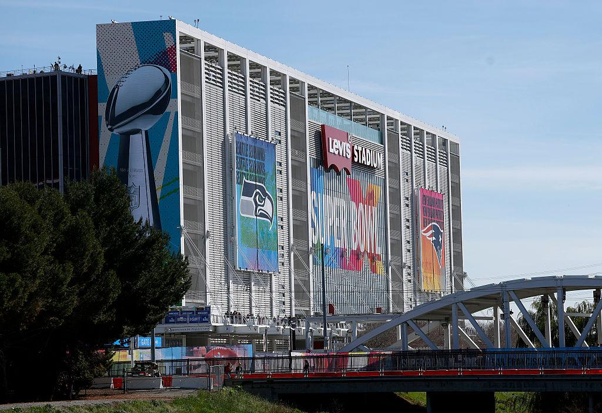
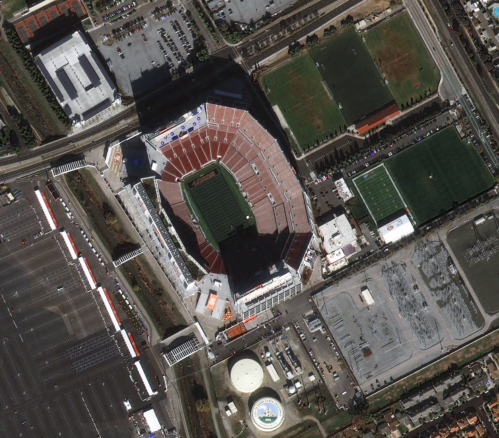

Levi's Stadium



The San Francisco Bay Area will host matches at Levi's Stadium in Santa Clara, a modern stadium designed for major international events.
The venue is known for its clean design, fan comfort, and strong matchday presentation.
Its location in the Bay Area adds a major West Coast destination to the World Cup schedule.